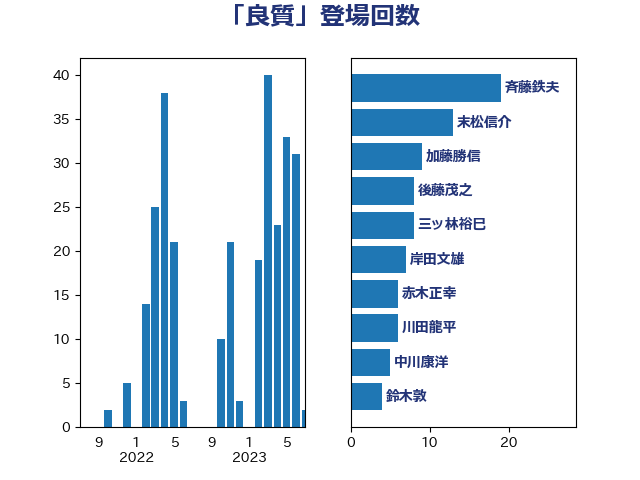

単語「良質」

| 斉藤鉄夫 | 公明党 | 19 回 |
| 末松信介 | 自由民主党 | 13 回 |
| 加藤勝信 | 自由民主党 | 9 回 |
| 後藤茂之 | 自由民主党 | 8 回 |
| 三ッ林裕巳 | 自由民主党 | 8 回 |
| 岸田文雄 | 自由民主党 | 7 回 |
| 赤木正幸 | 日本維新の会 | 6 回 |
| 川田龍平 | 立憲民主党 | 6 回 |
| 中川康洋 | 公明党 | 5 回 |
| 鈴木敦 | 国民民主党 | 4 回 |
| 野村哲郎 | 自由民主党 | 4 回 |
| 田村まみ | 国民民主党 | 4 回 |
| 津島淳 | 自由民主党 | 4 回 |
| 山田宏 | 自由民主党 | 4 回 |
| 倉林明子 | 日本共産党 | 4 回 |
| 野田聖子 | 自由民主党 | 3 回 |
| 細田博之 | 自由民主党 | 3 回 |
| 堀井巌 | 自由民主党 | 3 回 |
| 古川元久 | 国民民主党 | 3 回 |
| 青山繁晴 | 自由民主党 | 2 回 |
| 豊田俊郎 | 自由民主党 | 2 回 |
| 舟山康江 | 国民民主党 | 2 回 |
| 松本剛明 | 自由民主党 | 2 回 |
| 日下正喜 | 公明党 | 2 回 |
| 山崎正恭 | 公明党 | 2 回 |
| 尾辻秀久 | 無所属 | 2 回 |
| 小沢雅仁 | 立憲民主党 | 2 回 |
| 天畠大輔 | れいわ新選組 | 2 回 |
| 和田義明 | 自由民主党 | 2 回 |
| 吉田久美子 | 公明党 | 2 回 |
| 古川禎久 | 自由民主党 | 2 回 |
| 伊藤孝恵 | 国民民主党 | 2 回 |
| 中島克仁 | 立憲民主党 | 2 回 |
| 鳩山二郎 | 自由民主党 | 1 回 |
| 高橋光男 | 公明党 | 1 回 |
| 高木かおり | 日本維新の会 | 1 回 |
| 高市早苗 | 自由民主党 | 1 回 |
| 青木一彦 | 自由民主党 | 1 回 |
| 長谷川英晴 | 自由民主党 | 1 回 |
| 金村龍那 | 日本維新の会 | 1 回 |
| 赤羽一嘉 | 公明党 | 1 回 |
| 赤澤亮正 | 自由民主党 | 1 回 |
| 赤松健 | 自由民主党 | 1 回 |
| 西村康稔 | 自由民主党 | 1 回 |
| 西岡秀子 | 国民民主党 | 1 回 |
| 藤木眞也 | 自由民主党 | 1 回 |
| 藤巻健太 | 日本維新の会 | 1 回 |
| 簗和生 | 自由民主党 | 1 回 |
| 稲津久 | 公明党 | 1 回 |
| 石川香織 | 立憲民主党 | 1 回 |
| 畦元将吾 | 自由民主党 | 1 回 |
| 田村貴昭 | 日本共産党 | 1 回 |
| 甘利明 | 自由民主党 | 1 回 |
| 片山さつき | 自由民主党 | 1 回 |
| 沢田良 | 日本維新の会 | 1 回 |
| 池下卓 | 日本維新の会 | 1 回 |
| 梅谷守 | 立憲民主党 | 1 回 |
| 柴田巧 | 日本維新の会 | 1 回 |
| 枝野幸男 | 立憲民主党 | 1 回 |
| 杉久武 | 公明党 | 1 回 |
| 本田顕子 | 自由民主党 | 1 回 |
| 木村英子 | れいわ新選組 | 1 回 |
| 平沼正二郎 | 自由民主党 | 1 回 |
| 平木大作 | 公明党 | 1 回 |
| 市村浩一郎 | 日本維新の会 | 1 回 |
| 川崎ひでと | 自由民主党 | 1 回 |
| 岡本あき子 | 立憲民主党 | 1 回 |
| 山本太郎 | れいわ新選組 | 1 回 |
| 山本剛正 | 日本維新の会 | 1 回 |
| 小野泰輔 | 日本維新の会 | 1 回 |
| 大野泰正 | 自由民主党 | 1 回 |
| 堤かなめ | 立憲民主党 | 1 回 |
| 堀場幸子 | 日本維新の会 | 1 回 |
| 城井崇 | 立憲民主党 | 1 回 |
| 嘉田由紀子 | 無所属 | 1 回 |
| 吉田はるみ | 立憲民主党 | 1 回 |
| 勝目康 | 自由民主党 | 1 回 |
| 加藤竜祥 | 自由民主党 | 1 回 |
| 加藤明良 | 自由民主党 | 1 回 |
| 保岡宏武 | 自由民主党 | 1 回 |
| 佐藤英道 | 公明党 | 1 回 |
| 伊藤渉 | 公明党 | 1 回 |
| 伊藤岳 | 日本共産党 | 1 回 |
| 伊佐進一 | 公明党 | 1 回 |
| 井野俊郎 | 自由民主党 | 1 回 |
| 井原巧 | 自由民主党 | 1 回 |
| 中野英幸 | 自由民主党 | 1 回 |
| 中条きよし | 日本維新の会 | 1 回 |
| 上野通子 | 自由民主党 | 1 回 |
| おおつき紅葉 | 立憲民主党 | 1 回 |